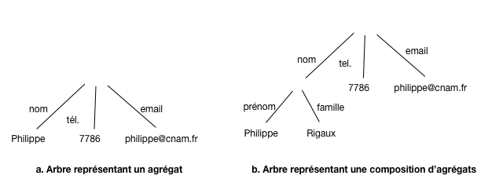
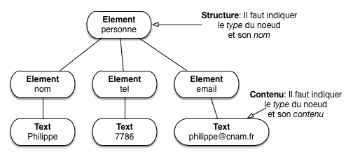
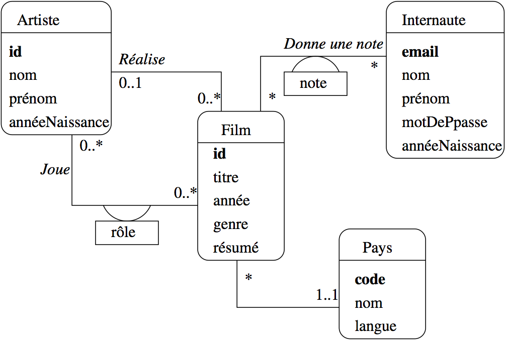
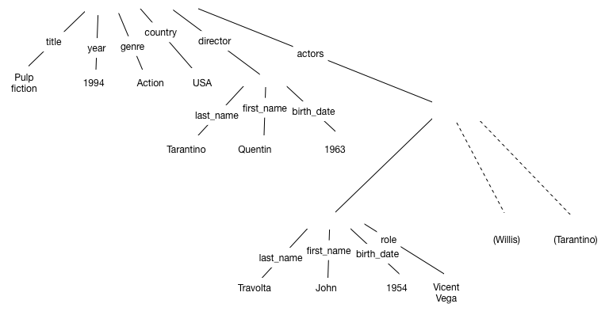

Modélisation de bases NoSQL¶
Ce chapitre est consacré à la notion de document qui est à la base de la représentation des données dans l’ensemble du cours. Cette notion est volontairement choisie assez générale pour couvrir la large palette des situations rencontrées: une valeur atomique (un entier, une chaîne de caractères) est un document; une paire clé-valeur est un document; un tableau de valeurs est un document; un agrégat de paires clé-valeur est un document; et de manière générale, toute composition des possibilités précédentes (un tableau d’agrégats de paires clé-valeur par exemple) est un document.
Nos documents sont caractérisés par l’existence d’une structure, et on parlera donc de documents structurés. Cette structure peut aller du très simple au très compliqué, ce qui permet de représenter de manière autonome des informations arbitrairement complexes.
Deux formats sont maintenant bien établis pour représenter les documents structurés: XML et JSON. Le premier est très complet mais très lourd, le second a juste les qualités inverses. Ces formats sont, entre autres, conçus pour que le codage des documents soit adapté aux échanges dans un environnement distribué. Un document en JSON ou XML peut être transféré par réseau entre deux machines sans perte d’information et sans problème de codage/décodage.
Il s’ensuit que les documents structurés sont à la base des systèmes distribués visant à des traitements à très grande échelle, autrement dit le « NoSQL » pour faire bref. Plusieurs de ces systèmes utilisent directement XML et surtout JSON, mais le modèle utilisé par d’autres est le plus souvent, à la syntaxe près, tout à fait équivalent. Il est important d’être capable de comprendre le modèle des documents structurés indépendamment d’un codage particulier. Ce chapitre se concentre sur le codage JSON. XML, beaucoup plus riche, est un peu trop complexe pour les systèmes NoSQL.
Il est donc tout à fait intéressant d’étudier la construction de documents structurés comme base de la représentation des données. Une question très importante dans cette perspective est celle de la modélisation préalable de collections de documents. Cette modélisation est une étape essentielle dans la construction de bases relationnelles, et assez négligée pour les bases NoSQL où on semble parfois considérer qu’il suffit d’accumuler des données sans se soucier de leur forme. Ce chapitre aborde donc la question, ne serait-ce que pour vous sensibiliser: construire une collection de documents comme une décharge de données est une très mauvaise idée et se paye très cher à terme.
S1: documents structurés¶
Supports complémentaires
Modèle des documents structurés¶
Le modèle des documents structurés repose sur quelques notions de base que nous définissons précisément pour commencer.
Définition (Valeur atomique)
Une valeur atomique est une instance de l’un des types de base usuels: entiers, flottants, chaînes de caractères.
Les types peuvent varier selon les systèmes mais la caractéristique première d’une valeur atomique est d’être non décomposable en sous-unités ayant un sens pour les applications qui les manipulent. De ce point de vue, une date n’est pas atomique puisqu’on pourrait la décomposer en jour/mois/an, sous-unités qui ont chacune un sens bien défini.
La signification d’une valeur est donnée par son association à un identifiant. Dans le modèle, les identifiants sont simplement des chaînes de caractère. On obtient des paires clé - valeur.
Définition (Paire clé - valeur)
Une paire clé - valeur est une paire \((i,v)\) où \(i\) est une clé et \(v\) une valeur.
Pour l’instant nous ne connaissons que les valeurs atomiques mais la définition des paires clé-valeur s’étend aux valeurs structurées que nous pouvons maintenant définir.
Définition (Valeur structurée)
La définition est récursive
Si \(v\) est une valeur atomique, \(v\) est une valeur structurée.
Si \(v_1, \cdots, v_n\) sont des valeurs structurées, alors la liste \([v_1, \cdots, v_n]\) est une valeur structurée.
Si \(p_1, \cdots, p_n\) sont des paires clé-valeur dont les clés sont distinctes deux à deux, alors le dictionnaire (ou objet) \({p_1, \cdots, p_n}\) est une valeur structurée.
Les listes (ou tableaux) et les dictionnaires (ou objets) sont les structures qui, appliquées récursivement, permettent de construire des valeurs structurées.
La définition des documents s’ensuit.
Définition (Document)
Tout dictionnaire est un document.
Une collection est un ensemble de documents. On ajoutera souvent, pour
les documents appartenant à une collection, une contrainte d’identification:
chaque document doit contenir une paire clé-valeur dont la clé
est conventionnellement id, et dont la valeur est unique au sein de la collection.
Cette valeur sert d’identifiant de recherche pour trouver rapidement un document dans une collection.
Ce modèle permet de représenter des informations plus ou moins complexes en satisfaisant les besoins suivants:
Flexibilité: la structure s’adapte à des variations plus ou moins importantes; prenons un document représentant un livre ou une documentation technique: on peut avoir (ou non) des annexes, des notes de bas de pages, tout un ensemble d’éléments éditoriaux qu’il faut pouvoir assembler souplement. L’imbrication libre des listes et des dictionnaires le permet.
Autonomie: quand deux systèmes échangent un document, toutes les informations doivent être incluses dans la représentation; en particulier, les données doivent être auto-décrites: le contenu vient avec sa propre description. C’est ce que permet la construction clé-valeur dans laquelle chaque valeur, atomique ou complexe, est qualifiée par par sa clé.
La construction récursive d’un document structuré implique une représentation sous forme d’un arbre dans lequel on représente à la fois le contenu (les valeurs) et la structure (les noms des clés et l’imbrication des constructeurs élémentaires). La Fig. 14 montre deux arbres correspondant à la représentation d’une personne. Les noms sont sur les arêtes, les valeurs sur les feuilles.
{kind=link}

Fig. 14 Représentation arborescente (arêtes étiquetées par les clés)¶
Cette représentation associe bien une structure (l’arbre) et le contenu (le texte dans les feuilles). Une autre possibilité est de représenter à la fois la structure et les valeurs comme des nœuds. C’est ce que fait XML (Fig. 15).
{kind=link}

Fig. 15 Représentation arborescente (clés représentées par des nœuds)¶
Important
les termes varient pour désigner ce que nous appelons document; on pourra parler d’objet (JSON), d’élément (XML), de dictionnaire (Python), de tableau associatif (PHP), de hash map (Java), etc. D’une manière générale ne vous laissez pas troubler par la terminologie variable, et ne lui accordez pas plus d’importance qu’elle n’en mérite.
Sérialisation des documents structurés¶
La sérialisation désigne la capacité à coder un document sous la forme d’une séquence d’octets qui peut « voyager » sans dégradation sur le réseau, une propriété essentielle dans le cadre d’un système distribué.
Comme vu précédemment, les documents structurés sont des arbres dont chaque partie est auto-décrite. On peut sérialiser un arbre de plusieurs manières, et plusieurs choix sont possibles pour le codage des paires clé-valeur. Les principaux codages sont JSON, XML, et YAML. Nous allons nous contenter du plus léger, JSON, largement majoritaire dans les bases NoSQL. Mais pour bien comprendre qu’il ne s’agit que d’une convention pour sérialiser un arbre, voici un brève comparaison avec XML.
Commençons par la structure de base: les paires (clé, valeur). En voici un exemple, codé en JSON.
"nom": "philippe"
Et le même, codé en XML.
<nom>philippe</nom>
Voici un second exemple JSON, montrant un document (qui, rappelons-le, est un dictionnaire).
{"nom": "Philippe Rigaux", "tél": 2157786, "email": "philippe@cnam.fr"}
La représentation équivalente en XML est donnée ci-dessous.
<personne>
<nom>Philippe Rigaux</nom>
<tel>2157786</tel>
<email>philippe@cnam.fr</email>
</personne>
On constate tout de suite que le codage XML est beaucoup plus bavard que celui de JSON. XML présente de plus des attributs inclus dans les balises ouvrantes dont l’interprétation est ambigue et qui viennent compliquer inutilement les choix de sérialisation. JSON est un choix clair et raisonnable.
Nous avons parlé de la nécessité de composer des structures comme condition essentielle pour obtenir une puissance de représentation suffisante. Sur la base des paires (clé, valeur) et des agrégats vus ci-dessus, une extension immédiate par composition consiste à considérer qu’un dictionnaire est une valeur. On peut alors créer une paire clé-valeur dans laquelle la valeur est un dictionnaire, et imbriquer les dictionnaires les uns dans les autres, comme le montre l’exemple ci-dessous.
{
"nom": {
"prénom": "Philippe",
"famille": "Rigaux"
},
"tél": 2157786,
"email": "philippe@cnam.fr"
}
Une liste est une valeur constituée d’une séquence de valeurs. Les listes sont sérialisées en JSON (où on les appelle tableaux) avec des crochets ouvrant/fermant.
[2157786, 2498762]
Une liste est une valeur (cf. les définitions précédentes), et on peut donc l’associer à une clé dans un document. Cela donne la forme sérialisée suivante:
{nom: "Philippe", "téls": [2157786, 2498762] }
XML en revanche ne connaît pas explicitement la notion de tableau. Tout est
uniformément représenté par balisage. Ici on peut introduire une balise tels
englobant les items de la liste.
<personne>
<nom>philippe</nom>
<tels>
<tel>2157786</tel>
<tel>2498762</tel>
</tels>
</personne>
Un des inconvénients de XML est qu’il existe plusieurs manières de représenter les mêmes données, ce qui donne lieu à des réflexions et débats inutiles. Un langage comme JSON propose un ensemble minimal et suffisant de structures, représentées avec concision. La puissance de XML ne vient pas de sa syntaxe mais de la richesse des normes et outils associés.
Enfin, la sérialisation (JSON ou XML) est conçu pour permettre des transferts sur le réseau sqns détérioration du contenu, ce qui est évidemment essentiel dans le contexte d’un système distribué où les données sont sans cesse échangées.
Abrégé de la syntaxe JSON¶
Résumons maintenant la syntaxe de JSON qui remplace, il faut bien le dire, tout à fait avantageusement XML dans la plupart des cas à l’exception sans doute de documents « rédigés » contenant beaucoup de texte: rapports, livres, documentation, etc. JSON est concis, simple dans sa définition, et très facile à associer à un langage de programmation (les structures d’un document JSON se transposent directement en structures du langage de programmation, valeurs, listes et objets).
Note
JSON est l’acronyme de JavaScript Object Notation. Comme cette expression le suggère, il a été initialement créé pour la sérialisation et l’échange d’objets Javascript entre deux applications. Le scénario le plus courant est sans doute celui des applications Ajax dans lesquelles le serveur (Web) et le client (navigateur) échangent des informations codées en JSON. Cela dit, JSON est un format texte indépendant du langage de programmation utilisé pour le manipuler, et se trouve maintenant utilisé dans des contextes très éloignés des applications Web.
C’est le format de données principal que nous aurons à manipuler. Il est utilisé comme modèle de données natif dans des systèmes NoSQL comme MongoDB, CouchDB, CouchBase, RethinkDB, et comme format d’échange sur le Web par d’innombrables applications, notamment celles basées sur l’architecture REST que nous verrons bientôt.
La syntaxe est très simple et a déjà été en grande partie introduite précédemment. Elle est présentée ci-dessous, mais vous pouvez aussi vous référer à des sites comme http://www.json.org/.
La structure de base est la paire (clé, valeur) (key-value pair).
"title": "The Social network"
Les valeurs atomiques sont:
les chaînes de caractères (entourées par les classiques apostrophes doubles anglais (droits)),
les nombres (entiers, flottants)
les valeurs booléennes (
trueoufalse).
Voici une paire (clé, valeur) où la valeur est un entier (NB: pas d’apostrophes).
"year": 2010
Et une autre avec un Booléen (toujours pas d’apostrophes).
"oscar": false
Les valeurs complexes sont soit des dictionnaires (qu’on appelle plutôt objets en JSON) soit des listes (séquences de valeurs). Un objet est un ensemble de paires clé-valeur dans lequel chaque clé ne peut apparaître qu’une fois au plus.
{"last_name": "Fincher", "first_name": "David", "oscar": true}
Un objet est une valeur complexe et peut être utilisé comme valeur dans une paire clé-valeur avec la syntaxe suivante.
"director": {
"last_name": "Fincher",
"first_name": "David",
"birth_date": 1962,
"oscar": true
}
Une liste (array) est une séquence de valeurs dont les types peuvent varier: Javascript est un langage non typé et les tableaux peuvent contenir des éléments hétérogènes, même si ce n’est sans doute pas recommandé. Une liste est une valeur complexe, utilisable dans une paire clé-valeur.
"actors": ["Eisenberg", "Mara", "Garfield", "Timberlake"]
La liste suivante est valide, bien que contenant des valeurs hétérogènes.
"bricabrac": ["Eisenberg", 1948, {"prenom", "Philippe", "nom": "Rigaux"}, true, [1, 2, 3]]
Ici, on peut commencer à réfléchir: imaginez que vous écriviez une application qui doit
traiter un document come celui ci-dessus. Vous savez que bricabrac est
une liste (du moins vous le supposez),
mais vous ne savez pas du tout à priori quelles valeurs elle contient. Pendant le
parcours de la liste, vous allez donc devoir multiplier les tests
pour savoir si vous avez affaire à un entier, à une chaîne de caractères, ou même
à une valeur complexe, liste, ou objet. Bref, vous devez, dans votre application,
effectuer le « nettoyage » et les contrôles qui n’ont pas été faits au moment
de la constitution du document. Ce point est un aspect très négatif de
la production incontrolée de documents (faiblement) structurés, et de l’absence de
contraintes (et de schéma) qui est l’une des caractéristiques (négatives) commune aux
système NoSQL. Il est développé
dans la prochaine section.
L’imbrication est sans limite: on peut avoir des tableaux de tableaux, des tableaux d’objets contenant eux-mêmes des tableaux, etc. Pour représenter un document avec JSON, nous adopterons simplement la contrainte que le constructeur de plus haut niveau soit un objet (encore une fois, en JSON, document et objet sont synonymes).
{
"title": "The Social network",
"summary": "On a fall night in 2003, Harvard undergrad and \n
programming genius Mark Zuckerberg sits down at his \n
computer and heatedly begins working on a new idea. (...)",
"year": 2010,
"director": {"last_name": "Fincher",
"first_name": "David"},
"actors": [
{"first_name": "Jesse", "last_name": "Eisenberg"},
{"first_name": "Rooney", "last_name": "Mara"}
]
}
Quiz¶


Mise en pratique (optionnel)¶
Voici quelques propositions d’explorations pratiques des environnements de documents JSON.
MEP MEP-S1-1: validation d’un document JSON
Comment savoir qu’un document JSON est bien formé (c’est-à-dire syntaxiquement correct)? Il existe des validateurs en ligne, bien utiles pour détecter les fautes.
Essayez par exemple http://jsonlint.com/: copiez-collez les documents JSON donnés précédemment dans le validateur et vérifiez qu’ils sont correct (ou pas…).
Savez-vous quel est le jeu de caractères utilisé pour JSON? Cherchez sur le Web. Savez-vous comment on peut représenter de longues chaînes de caractères (comme le résumé du film)? Cherchez (aide: regardez en particulier comment gérer les sauts de ligne).
Le document suivant contient (beaucoup) d’erreurs, à vous de les corriger. Cherchez-les visuellement, puis aidez-vous du validateur.
{
"title": "Taxi driver",
"year": 1976,
"genre": "drama",
"summary": 'Vétéran de la Guerre du Vietnam, Travis Bickle est chauffeur de
taxi dans la ville de New York. La violence quotidienne l'affecte peu à peu.',
"country": "USA",
"director": {
"last_name": "Scorcese",
first_name: "Martin",
"birth_date": "1962"
},
"actors": [
{
first_name: "Jodie",
"last_name": "Foster",
"birth_date": null,
"role": "1962"
}
{
first_name: "Robert",
"last_name": "De Niro",
"birth_date": "1943",
"role": "Travis Bickle ",
}
}
Au-delà des documents *bien formés*, on peut aussi contrôler qu'un document est *valide*
par rapport à une spécification (un schéma). Voir les exercices sur les schémas JSON ci-dessous.
MEP MEP-S1-2: récupérer des jeux de données
Nous allons récupérer aux formats JSON le contenu d’une base de données relationnelle pour disposer de documents à structure forte. Pour cela, rendez-vous sur le site http://deptfod.cnam.fr/bd/tp/datasets/. Sur ce site vous trouverez des fichiers en différents formats qui nous utiliserons dans d’autres mises en pratique.
MEP MEP-S1-3: JSON et l’Open Data
L’Open Data désigne le mouvement de mise à disposition des données afin de favoriser leur diffusion et la construction d’applications. Les données sont fournies au format JSON ! Regardez les sites suivants, récupérez quelques documents, commencez à imaginer quel applications vous pourriez construire.
MEP MEP-S1-4: produire un jeu de documents JSON volumineux
Pour tester des systèmes avec un jeu de données de taille paramétrable, nous pouvons utiliser des générateurs de données. Voici quelqes possibilités qu’il vous est suggéré d’explorer.
le site http://generatedata.com/ est très paramétrable mais ne permet malheureusement pas (aux dernières nouvelles) d’engendrer des documents imbriqués; à étudier quand même pour produire des tableaux volumineux;
https://github.com/10gen-labs/ipsum est un générateur de documents JSON spécifiquement conçu pour fournir des jeux de test à MongoDB, un système NoSQL que nous allons étudier. Une version adaptée à python3 de cet outil est disponible sur notre site http://b3d.bdpedia.fr/files/ipsum-master.zip
Ipsum produit des documents JSON conformes à un schéma (http://json-schema.org). Un script Python (vous devez avoir un interpréteur Python installé sur votre machine) prend ce schéma en entrée et produit un nombre paramétrable de documents. Voici un exemple d’utilisation.
python ./pygenipsum.py --count 1000000 schema.jsch > bd.json
Lisez le fichier README pour en savoir plus. Vous êtes invités à vous
inspirer des documents JSON représentant nos films pour créer
un schéma et engendrer une base de films avec quelques millions
de documents. Pour notre base movies, vous pouvez récupérer le
schéma JSON des documents.
(Suggestion: allez jeter un œil à http://www.jsonschema.net/).
{
"type":"object",
"$schema": "http://json-schema.org/draft-03/schema",
"properties":{
"_id": {"type":"string", "ipsum": "id"},
"actors": {
"type":"array",
"items":
{
"type":"object",
"required":false,
"minItems": 2,
"maxItems": 6,
"properties":{
"_id": {"type":"string", "ipsum": "id"},
"birth_date": {"type":"string", "format": "date"},
"first_name": {"type":"string", "ipsum": "fname"},
"last_name": {"type":"string", "ipsum": "fname"},
"role": {"type":"string"}
}
}
},
"genre": {"type":"string",
"enum": [ "Drame", "Comédie", "Action", "Guerre", "Science-Fiction"]},
"summary": {"type":"string", "required":false},
"title": {"type":"string"},
"year": {"type":"integer"},
"country": {"type":"string", "enum": [ "USA", "FR", "IT"]},
"director": {
"type":"object",
"properties":{
"_id":{"type":"string"},
"birth_date": {"type":"string"},
"first_name": {"type":"string", "ipsum": "fname"},
"last_name":{"type":"string", "ipsum": "fname"}
}
}
}
}
S2. Modélisation des collections¶
Supports complémentaires
Nous abordons maintenant une question très importante dans le cadre de la mise en œuvre d’une grande base de données constituée de documents: comment modéliser ces documents pour satisfaire les besoins de l’application? Et plus précisément:
quelle est la structure de ces documents?
quelles sont les contraintes qui portent sur le contenu des documents?
Cette question est bien connue dans le contexte des bases de données relationnelles, et nous allons commencer par rappeler la méthode bien établie. Pour les bases NoSQL, il n’existe pas de méthodologie équivalente. Une bonne (ou mauvaise) raison est d’ailleurs qu’il n’existe pas de modèle normalisé, et que la modélisation doit s’adapter aux caractéristiques de chaque système.
Note
Certains semblent considérer que la question ne se pose pas et qu’on peut entasser les données dans la base, n’importe comment, et voir plus tard ce que l’on peut en faire. C’est un(e absence de) choix porteur de redoutables conséquences pour la suite. La dernière partie de cette section donne mon avis à ce sujet.
Je vais donc extrapoler la méthodologie de conception relationnelle pour étudier ce que l’on peut obtenir avec un modèle de documents structurés.
Conception d’une base relationnelle¶
Note
Cette partie reprend de manière abrégée le contenu du chapitre « Conception d’une base de données » dans le support de cours Bases de données relationnelles. La lecture complète de ce chapitre est conseillée pour aller plus loin.
Voyons comment on pourrait modéliser notre base de films avec leurs réalisateurs et leurs acteurs. La démarche consiste à:
déterminer les « entités » (film, réalisateurs, acteurs) pertinentes pour l’application;
définir une méthode d’identification de chaque entité; en pratique on recourt à la définition d’un identifiant artificiel (il n’a aucun rôle descriptif) qui permet d’une part de s’assurer qu’une même « entité » est représentée une seule fois, d’autre part de référencer une entité par son identifiant.
préserver le lien entre les entités.
Voici une illustration informelle de la méthode, dans le contexte d’une base relationnelle où l’on suit une démarche fondée sur des règles de normalisation. Nous reprendrons ensuite une approche plus générale basée sur la notation Entité/association.
Commençons par les deux premières étapes. On va d’abord distinguer deux types d’entités: les films et les réalisateurs. On en déduit deux tables, celle des films et celle des réalisateurs.
Note
Comment distingue-t-on des entités et modélise-t-on correctement un domaine? Il n’y a pas de méthode magique: c’est du métier, de l’expérience, de la pratique, des erreurs, …
Ensuite,
on va ajouter à chaque table un attribut spécial, l’identifiant, désigné par id,
dont la valeur est simplement un compteur auto-incrémenté.
On obtient le résultat suivant.
id |
titre |
année |
|---|---|---|
1 |
Alien |
1979 |
2 |
Vertigo |
1958 |
3 |
Psychose |
1960 |
4 |
Kagemusha |
1980 |
5 |
Volte-face |
1997 |
6 |
Pulp Fiction |
1995 |
7 |
Titanic |
1997 |
8 |
Sacrifice |
1986 |
La table des films.
id |
nom |
prénom |
année |
|---|---|---|---|
101 |
Scott |
Ridley |
1943 |
102 |
Hitchcock |
Alfred |
1899 |
103 |
Kurosawa |
Akira |
1910 |
104 |
Woo |
John |
1946 |
105 |
Tarantino |
Quentin |
1963 |
106 |
Cameron |
James |
1954 |
107 |
Tarkovski |
Andrei |
1932 |
La table des réalisateurs
Un souci constant dans ce type de modélisation est d’éviter toute redondance. Chaque film, et chaque information relative à un film, ne doit être représentée qu’une fois. La redondance dans une base de données est susceptible de soulever de gros problèmes, et notamment des incohérences (on met à jour une des versions et pas les autres, et on se sait plus laquelle est correcte).
Il reste à représenter le lien entre les films et les metteurs
en scène, sans introduire de redondance. Maintenant que nous avons
défini les identifiants, il existe un moyen simple pour indiquer
quel metteur en scène a réalisé un film :
associer l’identifiant du metteur en scène au film. L’identifiant sert
alors de référence à l’entité. On ajoute un
attribut idRéalisateur dans la table Film, et on obtient la
représentation suivante.
id |
titre |
année |
idRéalisateur |
|---|---|---|---|
1 |
Alien |
1979 |
101 |
2 |
Vertigo |
1958 |
102 |
3 |
Psychose |
1960 |
102 |
4 |
Kagemusha |
1980 |
103 |
5 |
Volte-face |
1997 |
104 |
6 |
Pulp Fiction |
1995 |
105 |
7 |
Titanic |
1997 |
106 |
8 |
Sacrifice |
1986 |
107 |
Cette représentation est correcte. La redondance est réduite au minimum puisque seule l’identifiant du metteur en scène a été déplacé dans une autre table. Pour peu que l’on s’assure que cet identifiant ne change jamais, cette redondance n’induit aucun effet négatif.
Cette représentation normalisée évite des inconvénients qu’il est bon d’avoir en tête:
pas de redondance, donc toute mise à jour affecte l’unique représentation, sans risque d’introduction d’incohérences;
pas de dépendance forte induisant des anomalies de mise à jour: on peut par exemple détruire un film sans affecter les informations sur le réalisateur, ce qui ne serait pas le cas s’ils étaient associés dans la même table (ou dans un même document: voir plus loin).
Ce gain dans la qualité du schéma n’a pas pour contrepartie une perte d’information. Il est en effet facile de voir qu’elle peut être reconstituée intégralement. En prenant un film, on obtient l’identifiant de son metteur en scène, et cet identifiant permet de trouver l’unique ligne dans la table des réalisateurs qui contient toutes les informations sur ce metteur en scène. Ce processus de reconstruction de l’information, dispersée dans plusieurs tables, peut s’exprimer avec les opérations relationnelles, et notamment la jointure.
Il reste à appliquer une méthode systématique visant à aboutir au résultat ci-dessus, et ce même dans des cas beaucoup plus complexes. Celle universellement adoptée (avec des variantes) s’appuie sur les notions d’entité et d’association. En voici une présentation très résumée.
La méthode permet de distinguer les entités qui constituent la base de données, et les associations entre ces entités. Un schéma E/A décrit l’application visée, c’est-à-dire une abstraction d’un domaine d’étude, pertinente relativement aux objectifs visés. Rappelons qu’une abstraction consiste à choisir certains aspects de la réalité perçue (et donc à éliminer les autres). Cette sélection se fait en fonction de certains besoins, qui doivent être précisément définis, et rélève d’une démarche d’analyse qui n’est pas abordée ici.
{kind=link}

Fig. 16 Le schéma E/A des films¶
Par exemple, pour notre base de données Films, on n’a pas besoin de stocker dans la base de données l’intégralité des informations relatives à un internaute, ou à un film. Seules comptent celles qui sont importantes pour l’application. Voici le schéma décrivant cette base de données Films (Fig. 16). On distingue
des entités, représentées par des rectangles, ici Film, Artiste, Internaute et Pays ;
des associations entre entités représentées par des liens entre ces rectangles. Ici on a représenté par exemple le fait qu’un artiste joue dans des films, qu’un internaute note des films, etc.
Chaque entité est caractérisée par un ensemble d’attributs, parmi lesquels un ou plusieurs forment l’identifiant unique (en gras). Nous l’avons appelé id pour Film et Artiste, code pour le pays. Le nom de l’attribut-identifiant est peu important, même si la convention id est très répandue.
Les associations sont caractérisées par des cardinalités. La notation 0..* sur le lien Réalise, du côté de l’entité Film, signifie qu’un artiste peut réaliser plusieurs films, ou aucun. La notation 0..1 du côté Artiste signifie en revanche qu’un film ne peut être réalisé que par au plus un artiste. En revanche dans l’association Donne une note, un internaute peut noter plusieurs films, et un film peut être noté par plusieurs internautes, ce qui justifie l’a présence de 0..* aux deux extrêmités de l’association.
Outre les propriétés déjà évoquées (simplicité, clarté de lecture), évidentes sur ce schéma, on peut noter aussi que la modélisation conceptuelle est totalement indépendante de tout choix d’implantation. Le schéma de la Fig. 16 ne spécifie aucun système en particulier. Il n’est pas non plus question de type ou de structure de données, d’algorithme, de langage, etc. En principe, il s’agit donc de la partie la plus stable d’une application. Le fait de se débarrasser à ce stade de la plupart des considérations techniques permet de se concentrer sur l’essentiel : que veut-on stocker dans la base ?
Schémas relationnels¶
La transposition d’une modélisation entité/association s’effectue sous la forme d’un schéma relationnel. Un tel schéma énonce la structure et les contraintes portant sur les données. À partir de la modélisation précédente, par exemple, on obtient les tables Film, Artiste et Role suivantes:
create table Artiste (idArtiste integer not null,
nom varchar (30) not null,
prenom varchar (30) not null,
anneeNaiss integer,
primary key (idArtiste),
unique (nom, prenom))
create table Film (idFilm integer not null,
titre varchar (50) not null,
annee integer not null,
idRealisateur integer not null,
genre varchar (20) not null,
resume varchar(255),
codePays varchar (4),
primary key (idFilm),
foreign key (idRealisateur) references Artiste);
create table Role (idFilm integer not null,
idActeur Iinteger not null,
nomRole varchar(30),
primary key (idActeur,idFilm),
foreign key (idFilm) references Film,
foreign key (idActeur) references Artiste);
Le schéma impose des contraintes sur le contenu de la base. On a par
exemple spécifié qu’on ne doit pas trouver deux artistes avec la même paire
de valeurs (prénom, nom). La contrainte not null indique qu’une valeur doit
toujours être présente. Une contrainte très importante est la contrainte
d’intégrité référentielle (foreign key): elle garantit par exemple
que la valeur de idRéalisateur correspond bien à une clé primaire
de la table Artiste. En d’autres termes: un film fait référence,
grâce à idRéalisateur, à un artiste qui est représenté dans la base.
Le système garantit que ces contraintes sont respectées.
Voici un exemple de contenu pour la table Artiste.
Tableau 1 Table des artistes¶ id
nom
prénom
11
Travolta
John
27
Willis
Bruce
37
Tarantino
Quentin
167
De Niro
Robert
168
Grier
Pam
On peut remarquer que le schéma et la base sont représentés séparément, contrairement aux documents structurés où chaque valeur est associée à une clé qui indique sa signification. Ici, le placement d’une valeur dans un colonne spécifique suffit.
Voici un exemple pour la table des films, illustrant la notion de clé étrangère.
Tableau 2 Table des films¶ id
titre
année
idRéal
17
Pulp Fiction
1994
37
57
Jackie Brown
1997
37
Une valeur de la colonne idReal, une clé étrangère, est impérativement
la valeur d’une clé primaire existante dans la table Artiste. Cette contrainte forte
est vérifiée par le système relationnel et garantit que la base est saine. Il est impossible
de faire référence à un metteur en scène qui n’existe pas.
Dans une base relationnelle (bien conçue) les données sont cohérentes et cela apporte une garantie forte aux applications qui les manipulent: pas besoin de vérifier par exemple, quand on lit le film 17, que l’artiste avec l’identifiant 37 existe bien: c’est garanti par le schéma.
En contrepartie, la distribution des données dans plusieurs tables rend le contenu de chacune incomplet. Le système de référencement par clé étrangère en particulier ne donne aucune indication directe sur l’entité référencée, d’où des tables au contenu succinct et non interprétable. Voici la table Role.
Tableau 3 Table des rôles¶ idFilm
idArtiste
rôle
17
11
Vincent Vega
17
27
Butch Coolidge
17
37
Jimmy Dimmick
En la regardant, on ne sait pas grand chose: il faut aller voir par exemple, pour le premier rôle, que le film 17 est Pulp Fiction, et l’artiste 11, John Travolta. En d’autres termes, il faut effectuer une opération rapprochant des données réparties dans plusieurs tables. Un système relationnel nous fournit cette opération: c’est la jointure. Voici comment on reconstituerait l’information sur le rôle « Vincent Vega » en SQL.
select titre, nom, prénom, role from Film, Artiste, Role where role='Vincent Vega' and Film.id = Role.idFilm and Artiste.id = Role.idActeur
La représentation des informations relatives à une même « entité » (un film) dans plusieurs tables a une autre conséquence qui motive (parfois) le recours à une représentation par document structuré. Il faut de fait effectuer plusieurs écritures pour une même entité, et donc appliquer une transaction pour garantir la cohérence des mises à jour. On peut considérer que ces précautions et contrôles divers pénalisent les performances (pour des raisons claires: assurer la cohérence de la base).
Note
Pour la notion de transaction, reportez-vous au chapitre introductif de http://sys.bdpedia.fr.
Ce qu’il faut retenir¶
En résumé, les caractéristiques d’une modélisation relationnelle sont
Un objectif de normalisation qui vise à éviter à la fois toute redondance et toute perte d’information;
la redondance est évitée en découpant les données avec une granularité fine, et en les stockant indépendamment les unes des autres;
la perte d’information est évitée en utilisant un système de référencement basé sur les clés primaires et clés étrangères.
Les données sont contraintes par un schéma qui impose des règles sur le contenu de la base
Il n’y a aucune hiérarchie dans la représentation des entités; une entité comme Pays, qui peut être considérée comme secondaire, a droit à sa table dédiée, tout comme l’entité Film qui peut être considérée comme essentielle; on ne pré-suppose pas en relationnel, l’importance respective des entités représentées;
La distribution des données dans plusieurs tables est compensée par la capacité de SQL à effectuer des jointures qui exploitent le plus souvent le système de référencement (clé primaire, clé étrangère) pour associer des lignes stockées séparément.
Plusieurs écritures transactionnelles peuvent être nécessaires pour créer une seule entité.
Ce modèle est cohérent. Il fonctionne très bien, depuis très longtemps, au moins pour des données fortement structurées comme celles que nous étudions ici. Il permet de construire des bases pérennes, conçues en grand partie indépendamment des besoins ponctuels d’une application, représentant un domaine d’une manière suffisament générique pour satisfaire tous les types d’accès, mêmes s’ils n’étaient pas envisagés au départ.
Voyons maintenant ce qu’il en est avec un modèle de document structuré.
Conception NoSQL avec documents structurés¶
En relationnel, on a des lignes (des nuplets pour être précis) et des tables (des relations). Dans le contexte du NoSQL, on va parler de documents et de collections (de documents).
Documents et collections¶
Notons pour commencer que la représentation arborescente est très puissante, plus puissante que la représentation offerte par la structure tabulaire du relationnel. Dans un nuplet relationnel, on ne trouve que des valeurs dites atomiques, non décomposables. Il ne peut y avoir qu’un seul genre pour un film. Si ce n’est pas le cas, il faut (processus de normalisation) créer une table des genres et la lier à la table des films (je vous laisse trouver le schéma correspondant, à titre d’exercice). Cette nécessité de distribuer les données dans plusieurs tables est une lourdeur souvent reprochée à la modélisation relationnelle.
Avec un document structuré, il est très facile de représenter les genres comme un tableau de valeurs, ce qui rompt la première règle de normalisation.
{
"title": "Pulp fiction",
"year": "1994",
"genre": ["Action", "Policier", "Comédie"]
"country": "USA"
}
Par ailleurs, il est également facile de représenter une table par une collection de documents structurés. Voici la table des artistes en notation JSON.
[
artiste: {"id": 11, "nom": "Travolta", "prenom": "John"},
artiste: {"id": 27, "nom": "Willis", "prenom": "Bruce"},
artiste: {"id": 37, "nom": "Tarantino", "prenom": "Quentin"},
artiste: {"id": 167, "nom": "De Niro", "prenom": "Robert"},
artiste: {"id": 168, "nom": "Grier", "prenom": "Pam"}
]
On pourrait donc « encoder » une base relationnelle sous la forme de documents structurés, et chaque document pourrait être plus complexe structurellement qu’une ligne dans une table relationnelle.
D’un autre côté, une telle représentation, pour des données régulières, n’est pas du tout efficace à cause de la redondance de l’auto-description: à chaque fois on répète le nom des clés, alors qu’on pourrait les factoriser sous forme de schéma et les représenter indépendamment (ce que fait un système relationnel, voir ci-dessus).
L’auto-description n’est valable qu’en cas de variation dans la structure, ou éventuellement pour coder l’information de manière autonome en vue d’un échange. Une représentation arborescente XML / JSON est donc plus appropriée pour des données de structure complexe et surtout flexible.
Le pouvoir de l’imbrication des structures¶
Dans une modélisation relationnelle, nous avons dû séparer les films et les artistes dans deux tables distinctes, et lier chaque film à son metteur en scène par une clé étrangère. Grâce à l’imbrication des structures, il est possible avec un document structuré de représenter l’information de la manière suivante:
{
"title": "Pulp fiction",
"year": "1994",
"genre": "Action",
"country": "USA",
"director": {
"last_name": "Tarantino",
"first_name": "Quentin",
"birth_date": "1963"
}
}
On a imbriqué un objet dans un autre, ce qui ouvre la voie à la représentation d’une entité par un unique document complet.
Important
Notez que nous n’avons plus besoin du système de référencement par clés primaires / clés étrangères, remplacé par l’imbrication qui associe physiquement les entités film et artiste.
Prenons l’exemple du film « Pulp Fiction » et son metteur en scène et
ses acteurs. En relationnel, pour
reconstituer l’ensemble du film « Pulp Fiction », il faut suivre les références
entre clés primaires et clés étrangères. C’est ce qui permet
de voir que Tarantino (clé = 37) est réalisateur de Pulp Fiction
(clé étrangère idRéal dans la table Film, avec la valeur 37) et joue également un rôle (clé
étrangère idArtiste dans la table Rôle).
Tout peut être représenté par un unique document structuré, en tirant parti de l’imbrication d’objets dans des tableaux.
{
"title": "Pulp fiction",
"year": "1994",
"genre": "Action",
"country": "USA",
"director": {
"last_name": "Tarantino",
"first_name": "Quentin",
"birth_date": "1963" },
"actors": [
{"first_name": "John",
"last_name": "Travolta",
"birth_date": "1954",
"role": "Vincent Vega" },
{"first_name": "Bruce",
"last_name": "Willis",
"birth_date": "1955",
"role": "Butch Coolidge" },
{"first_name": "Quentin",
"last_name": "Tarantino",
"birth_date": "1963",
"role": "Jimmy Dimmick"}
]
}
Nous obtenons une unité d’information autonome représentant l’ensemble des informations relatives à un film (on pourrait bien entendu en ajouter encore d’autres, sur le même principe). Ce rassemblement offre des avantages forts dans une perspective de performance pour des collections à très grande échelle.
Plus besoin de jointure: il est inutile de faire des jointures pour reconstituer l’information puisqu’elle n’est plus dispersée, comme en relationnel, dans plusieurs tables.
Plus besoin de transaction (?): une écriture (du document) suffit; pour créer toutes les données du film « Pulp fiction » ci-dessus, il faudrait écrire 1 fois dans la table Film, 3 fois dans la table Artiste; 3 fois dans la table Role.
De même, une lecture suffit pour récupérer l’ensemble des informations.
Adaptation à la distribution. Si les documents sont autonomes, il est très facile des les déplacer pour les répartir au mieux dans un système distribué; l’absence de lien avec d’autres documents donne la possibilité d’organiser librement la collection.
Cela semble séduisant… De plus, les transactions et les jointures sont deux mécanismes assez compliqués à mettre en œuvre dans un environnement distribué. Ne pas avoir à les implanter simplifie considérablement la création de systèmes NoSQL, d’où la prolifération à laquelle nous assistons. Tout système sachant faire des put() et des get() peut prétendre à l’appellation !
Mais il y a bien entendu des inconvénients.
Les inconvénients¶
En observant bien le document ci-dessus, on réalise rapidement qu’il introduit cependant deux problèmes importants.
Hiérarchisation des accès: la représentation des films et des artistes n’est pas symétrique; les films apparaissent près de la racine des documents, les artistes sont enfouis dans les profondeurs; l’accès aux films est donc privilégié (on ne peut pas accéder aux artistes sans passer par eux) ce qui peut ou non convenir à l’application.
Perte d’autonomie des entités. Il n’est plus possible de représenter les informations sur un metteur en scène si on ne connaît pas au moins un film; inversement, en supprimant un film (e.g., Pulp Fiction), on risque de supprimer définitivement les données sur un artiste (e.g., Tarantino).
Redondance: la même information doit être représentée plusieurs fois, ce qui est tout à fait fâcheux. Quentin Tarantino est représenté deux fois, et en fait il sera représenté autant de fois qu’il a tourné de films (ou fait l’acteur quelque part).
En extrapolant un peu, il est clair que la contrepartie d’un document autonome contenant toutes les informations qui lui sont liées est l’absence de partage de sous-parties potentiellement communes à plusieurs documents (ici, les artistes). On aboutit donc à une redondance qui mène immanquablement à des incohérences diverses.
Par ailleurs, on privilégie, en modélisant les données comme des documents, une certaine perspective de la base de données (ici, les films), ce qui n’est pas le cas en relationnel où toutes les informations sont au même niveau. Avec la représentation ci-dessus par exemple, comment connaître tous les films tournés par Tarantino? Il n’y a pas vraiment d’autre solution que de lire tous les documents, c’est compliqué et surtout coûteux.
Ce sont des inconvénients majeurs, qui risquent à terme de rendre la base de données inexploitable. Il faut bien les prendre en compte avant de se lancer dans l’aventure du NoSQL. D’autant que …
Et le schéma?¶
Les systèmes NoSQL (à quelques exceptions près, cf. Cassandra) ne proposent pas de schéma, ou en tout cas rien d’équivalent aux schémas relationnels. Il existe un gain apparent: on peut tout de suite, sans effectuer la moindre démarche de modélisation, commencer à insérer des documents. Rapidement la structure de ces documents change, et on ne sait plus trop ce qu’on a mis dans la base qui devient une véritable poubelle de données.
Si on veut éviter cela, c’est au niveau de l’application effectuant des insertions qu’il faut effectuer la vérification des contraintes qu’un système relationnel peut nativement prendre en charge. Il faut également, pour toute application exploitant les données, effectuer des contrôles puisqu’il n’y a pas de garantie de cohérence ou de complétude.
L’absence de schéma est (à mon avis) un autre inconvénient fort des systèmes NoSQL.
Ma conclusion: Relationnel ou NoSQL?¶
Note
Ce qui suit constitue un ensemble de conclusions que je tire personnellement des arguments qui précèdent. Je ne cherche pas à polémiquer, mais à éviter de gros soucis à beaucoup d’enthousiastes qui penseraient découvrir une innovation mirifique dans le NoSQL. Contre-arguments et débats sont les bienvenus!
La (ma) conclusion de ce qui précède est que les systèmes NoSQL sont beaucoup moins puissants, fonctionnellement parlant, qu’un système relationnel. Ils présentent quelques caractéristiques potentiellement avantageuses dans certaines situations, essentiellement liés à leur capacité à passer à l’échelle comme système distribué. Ils ne devraient donc être utilisés que dans des situations très précises, et rarement rencontrées. Résumons les inconvénients:
Un modèle de données puissant, mais menant à des représentations asymétriques des informations.
Certaines applications seront privilégiées, et d’autres pénalisées. Une base de données est (de mon point de vue) beaucoup plus pérenne que les applications qui l’exploitent, et il est dangereux de concevoir une base pour une application initiale, et de s’apercevoir qu’elle est inadaptée ensuite.
Pas de jointure, pas de langage de requêtes et en tout cas non normalisé.
Cela implique une chute potentielle extrêmement forte de la productivité. Êtes-vous prêts à écrire un programme à chaque fois qu’il faut effectuer une mise à jour, même minime?
Pas de schéma, pas de contrôle sur les données.
Ne transformez pas votre base en déchèterie de documents! La garantie de ce que l’on va trouver dans la base évite d’avoir à multiplier les tests dans les applications.
Pas de transactions.
Une transaction assure la cohérence des données (cf. le support en ligne http://sys.bdpedia.fr). Êtes-vous prêts à baser un site de commerce électronique sur un système NoSQL qui permettra de livrer des produits sans garantir que vous avez été payé?
D’une manière générale, ce qu’un système NoSQL ne fait pas par rapport à un système relationnel doit être pris en charge par les applications (contrôle de cohérence, opérations de recherche complexes, vérification du format des documents). C’est potentiellement une grosse surcharge de travail et un risque (comment garantir que les contrôles ou tests sont correctement implantés?).
Alors, quand peut-on recourir un système NoSQL? Il existe des niches, celles qui présentent une ou plusieurs des caractéristiques suivantes:
Des données très spécifiques, peu ou faiblement structurées. graphes, séries temporelles, données textuelles et multimédia. Les systèmes relationnels se veulent généralistes, et peuvent donc être moins adaptés à des données d’un type très particulier.
Peu de mises à jour, beaucoup de lectures. C’est le cas des applications de type analytique par exemple: on écrit une fois, et ensuite on lit et relit pour analyser. Dans ce cas, la plupart des inconvénients ci-dessus disparaissent ou sont minorés.
De très gros volumes. Un système relationnel peut souffrir pour calculer efficament des jointures pour de très gros volumes (ordre de grandeur: des données dépassant les capacités d’un unique ordinateur, soit quelques TéraOctets à ce jour). Dans ce cas on peut vouloir dénormaliser, recourir à un système NoSQL, et assumer les dangers qui en résultent.
De forts besoins en temps réel. Si on veut obtenir des informations en quelques ms, même sur de très grandes bases, certains systèmes NoSQL peuvent être mieux adaptés.
Voilà ! Un cas typique et justifié d’application est celui de l’accumulation de données dans l’optique de construire des modèles statistiques. On accumule des données sur le comportement des utilisateurs pour construire un modèle de recommandation par exemple. La base est alors une sorte d’entrepôt de données, avec des insertions constantes et aucune mise à jour des données existantes.
NoSQL = Not Only SQL. En dehors de ces niches, je pense très sincèrement que dans la plupart des cas le relationnel reste un meilleur choix et fournit des fonctionnalités beaucoup plus riches pour construire des applications. Le reste du cours vous permettra d’apprécier plus en profondeur la technicité de certains arguments. Après ce sera à vous de juger.
Quiz¶
Exercices¶
Exercice Ex-S2-1: document = graphe
Représenter sous forme de graphe le film complet « Pulp Fiction » donné précédemment.
Correction
La Fig. 17 montre la forme arborescente dans la variante où les étiquettes sont sur les arêtes. Les sous-graphes pour Bruce Willis et Quentin Tarantino (en tant qu’acteur) ne sont pas développés.
{kind=link}

Fig. 17 Représentation arborescente du film Pulp Fiction¶
La représentation avec les étiquettes sur les arêtes correspond à l’encodage JSON. XML s’appuie sur une représentation plus compliquée dans laquelle les étiquettes sont des nœuds intermédiaires. Cette différence explique en grande partie l’abandon de XML comme langage de modélisation de données. Les sous-graphes pour Bruce Willis et Quentin Tarantino (en tant qu’acteur) ne sont pas développés.
Exercice Ex-S2-2: Privilégions les artistes
Reprendre la petite base des films (les 3 tables données ci-dessus) et donner un document structuré donnant toutes les informations disponibles sur Quentin Tarantino. On veut donc représenter un document centré sur les artistes et pas sur les films.
Correction
Voici une représentation possible. Cette fois c’est la représentation des films qui est redondante.
{
"_id": "37",
"first_name": "Quentin",
"last_name": "Tarantino",
"films_dirigés" : [
{
"title": "Pulp fiction",
"year": "1994",
"actors": [
{"artist:11", "role": "Vincent Vega" },
{"artist:27", "role": "Butch Coolidge"}
]
},
{
"title": "Jacky Brown",
...
},
...
],
"films_joués": [
{
"title": "Pulp fiction",
...
},
{
"title": "Reservoir Dogs",
...
},
...
]
}
Cette représentation convient pour des tâches d’analyse, en considérant qu’un document est créé une fois pour toutes et jamais modifié. Mais elle est inexploitable pour une base dans laquelle on effectue des mises à jour fréquentes (bases dites « transactionnelles ») à cause de la difficulté à préserver la cohérence des données.
Exercice Ex-S2-3: Comprendre la notion de document structuré
Vous gérez un site de commerce électronique et vous attendez des dizaines de millions d’utilisateurs (ou plus). Vous vous demandez quelle base de données utiliser: relationnel ou NoSQL?
Les deux tables suivantes représentent la modélisation relationnelle pour les utilisateurs et les visites de pages (que vous enregistrez bien sûr pour analyser le comportement de vos utilisateurs).
id |
nom |
|
|---|---|---|
1 |
Serge |
|
2 |
Benoît |
idUtil |
page |
nbVisites |
|---|---|---|
1 |
2 |
|
2 |
1 |
|
1 |
1 |
Proposez une représentation de ces informations sous forme de document structuré
en privilégiant l’accès par les utilisateurs;
en privilégiant l’accès par les pages visitées.
Correction
Voici une représentation possible, centrée utilisateurs.
[
{
"_id": "1",
"email": "s@cnam.fr",
"nom": "Serge",
"visites" : [
{
"page": "http://cnam.fr/A",
"nbVisites": 2
},
{
"page": "http://cnam.fr/B",
"nbVisites": 1
}
]
},
{
"_id": "2",
"email": "b@cnam.fr",
"nom": "Benoît",
"visites" : [
{
"page": "http://cnam.fr/A",
"nbVisites": 2
}
]
}
]
La représentation centrée sur les pages s’en déduit aisément.
Exercice Ex-S2-4: extrait de l’examen du 16 juin 2016
Le service informatique du Cnam a décidé de représenter ses données sous forme de documents structurés pour faciliter les processus analytiques. Voici un exemple de documents centrés sur les étudiants et incluant les Unités d’Enseignement (UE) suivies par chacuns.
{ "_id": 978, "nom": "Jean Dujardin", "UE": [{"id": "ue:11", "titre": "Java", "note": 12}, {"id": "ue:27", "titre": "Bases de données", "note": 17}, {"id": "ue:37", "titre": "Réseaux", "note": 14} ] } { "_id": 476, "nom": "Vanessa Paradis", "UE": [{"id": "ue:13", "titre": "Méthodologie", "note": 17, {"id": "ue:27", "titre": "Bases de données", "note": 10}, {"id": "ue:76", "titre": "Conduite projet", "note": 11} ] }
Sachant que ces documents sont produits à partir d’une base relationnelle, reconstituez le schéma de cette base et indiquez le contenu des tables correspondant aux documents ci-dessus.
Correction
Il s’agit d’une sorte de rétro-ingéniere à partir de documents structurés dont la forme aparaît extrêmement régulière. On trouve, dans chaque document, une description de personnes (étudiants) au premier niveau, avec un ensemble imbriqué (le tableau de UEs).
Ces documents devraient vous rappeler quelque chose: les films et les acteurs, avec les rôles joués par les acteurs. Ici, on a des étudiants (premier type d’entité), des UEs (deuxième type d’entité) et une association entre les deux: les étudiants sont inscrits à des UEs, et obtiennent une note. Le petit exemple donné montre bien qu’un étudiant peut suivre plusieurs UEs, et inversement, on remarque qu’une même UE (la 27) est suivie par plusieurs étudiants.
Conclusion: il s’agit d’une classique assocation plusieurs-à-plusieurs, qui se représente en relationnel avec 3 tables:
Etudiant,UEetInscription. Remarquez bien que la note ne peut être placée ni dans la tableEtudiantni dans la tableUE, mais seulement dans la tableInscription.
Tableau 6 Table des étudiants¶ id
nom
978
Jean Dujardin
476
Vanessa Paradis
Tableau 7 Table des UEs¶ id
titre
11
Java
13
Méthodologie
27
Bases de données
37
Réseaux
76
Conduite de projets
Il nous faut finalement une table des inscriptions.
Tableau 8 Table des inscriptions¶ idEtudiant
idUE
note
978
11
12
978
27
17
978
37
14
476
13
17
476
27
10
476
76
11
Et voilà. La représentation relationnelle est entièrement à plat, ce qui a l’avantage de donner une vision parfaitement symétrique, non centrée sur une entité particulière. L’inconvénient est la distribution des données dans plusieurs tables: il faut faire des jointures.
Proposez une autre représentation des mêmes données, centrée cette fois, non plus sur les étudiants, mais sur les UEs.
Avec les documents structurés, on choisit de privilégier certaines entités, celles qui sont proches de la racine de l’arbre. En centrant sur les UEs, on obtient le même contenu, mais avec une représentation très différente.
Correction
{ "_id": "ue:11", "titre": "Java", "etudiants": [ {"id": 978, "nom": "Jean Dujardin", "note": 12} ] } { "_id": "ue:13", "titre": "Méthodologie", "etudiants": [ {"id": 476, "nom": "Vanessa Paradis", "note": 17} ] } { "_id": "ue:27", "titre": "Java", "etudiants": [ {"id": 978, "nom": "Jean Dujardin", "note": 17}, {"id": 476, "nom": "Vanessa Paradis", "note": 10} ] } { "_id": "ue:37", "titre": "Réseaux", "etudiants": [ {"id": 978, "nom": "Jean Dujardin", "note": 14} ] } { "_id": "ue:76", "titre": "Conduite projet", "etudiants": [ {"id": 476, "nom": "Vanessa Paradis", "note": 11} ] }
Exercice Ex-S5-5: passer du relationnel aux documents complexes
Vous trouverez la description d’une base relationnelle dans le chapitre de mon cours sur SQL http://sql.bdpedia.fr/relationnel.html#la-base-des-voyageurs. Elle décrit des voyageurs séjournant dans des logements. Notre but est de transformer cette base en une collection de documents JSON.
Proposez un document JSON représentant toutes les informations disponibles sur un des logements, par exemple U Pinzutu. On devrait donc y trouver les activités proposées.
Proposez un document JSON représentant toutes les informations disponibles sur un voyageur, par exemple Phileas Fogg.
Proposez un schéma JSON pour des documents représentant les logements et leurs activités mais pas les séjours.
Vérifiez la validité syntaxique et insérez les documents dans MongoDb en effectuant une validation avec le schéma.
Correction
Voici un document JSON représentant un logement. Notez que l’on pourrait aussi ajouter la liste des séjours (ça devient rapidement laborieux).
{ "code":"pi", "nom":" U Pinzutu", "capacité":10, "type":"Gîte", "lieu":"Corse", "activités":[ { "codeActivité":"Voile", "description":"Pratique du dériveur et du catamaran" }, { "codeActivité":"Plongée", "description":"Baptèmes et préparation des brevets" } ] }Le schéma pour ce type de document est le suivant (on peut ajouter toutes sortes de contraintes, descriptions, etc.)
{ "bsonType":"object", "required":["code","nom","capacité","lieu"], "properties":{ "code":{ "bsonType":"string"}, "nom":{"bsonType":"string"}, "capacité":{"bsonType":"int"}, "type":{"enum":["Gîte","Hôtel","Auberge"]}, "lieu":{ "bsonType":"string"}, "activités": { "bsonType":"array", "items": { "bsontype": "object", "required":[ "codeActivité"], "properties":{ "codeActivité":{"bsonType":"string"} } } } } }
Pour aller plus loin (optionnel)¶
Exercice Ex-S5-1: des schémas pour valider les documents JSON
Il est facile de transformer MongoDB en une poubelle de données en insérant n’importe quel document. Depuis la version 3.2, MongoDB offre la possibilité d’associer un schéma à une collection et de contrôler que les documents insérés sont conformes au schéma.
La documentation est ici: https://docs.mongodb.com/manual/core/schema-validation
À vous de jouer: définissez le schéma de la collection des films, et appliquez la validation au moment de l’insertion. Vous pouvez commencer avec une collection simple, celle des artistes, pour vous familiariser avec cette notion de schéma.
Exercice Ex-S3-2: modélisation d’une base Cassandra
Maintenant, vous allez modéliser une base Cassandra pour stocker les informations sur le métro parisien. Voici deux fichiers JSON:
http://b3d.bdpedia.fr/files/metro-lines.json, les lignes de métro
http://b3d.bdpedia.fr/files/metro-stops.json, tous les arrêts de métro
Proposez un modèle Cassandra, créez la ou les table(s) nécessaires, essayez d’insérer quelques données, voire toutes les données (ce qui suppose d’écrire un petit programme pour les mettre au bon format).
Correction
CREATE KEYSPACE IF NOT EXISTS Metros
WITH REPLICATION = { 'class' : 'SimpleStrategy', 'replication_factor': 3 };
create table lines(color text, name text, number text,
route_name text, primary key(color));
create type line(line text, position int);
create table stops(
description text,
latitude float,
lines set<frozen<line>>,
longitude float,
name text,
primary key(description)
);
insert into lines JSON '
{
"color": "#F58F53",
"name": "Tramway 3A",
"number": "3A",
"route_name": "PONT GARIGLIANO - HOP G.POMPIDOU <-> PORTE DE VINCENNES"
}';
insert into stops json '
{
"description": "Jean Jaurès (23 boulevard) - 92012",
"latitude": 48.84228,
"lines": [{"line": "ligne-10", "position": 2}],
"longitude": 2.238863,
"name": "Boulogne-Jean-Jaurès"
}
';

Ce cours de Philippe Rigaux est mis à disposition selon les termes de la licence Creative Commons Attribution - Pas d’Utilisation Commerciale - Partage dans les Mêmes Conditions 4.0 International.
Table Of Contents
- Introduction
- Préliminaires: Docker
- Modélisation de bases NoSQL
- Recherche exacte
- Etude de cas: Cassandra
- Cassandra - Travaux Pratiques
- Recherche approchée
- ElasticSearch - Travaux pratiques
- Traitements par lot
- Pig : Travaux pratiques
- Le cloud, une nouvelle machine de calcul
- Systèmes NoSQL: la réplication
- Systèmes NoSQL: le partitionnement
- Annales des examens
Recherche
Saisissez un ou plusieurs mots-clés.